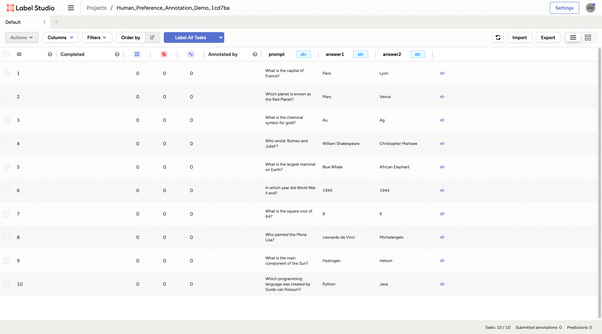

Data Processing#
Example: Data Processor for Task Pipeline#
In this example, you will learn how to apply the data processor of Trinity-RFT to prepare and prioritize the dataset before task exploring and training. This example takes GSM-8K dataset as the example dataset to figure out:
how to prepare the data processor
how to configure the data processor
what the data processor can do
Before getting started, you need to prepare the main environment of Trinity-RFT according to the installation section of the README file,
and store the base url and api key in the environment variables OPENAI_BASE_URL and OPENAI_API_KEY for some agentic or API-model usages if necessary.
Data Preparation#
Prepare the Data Processor#
As the overall framework of Trinity-RFT shows, the data processor is one of the high-level functions. Trinity-RFT encapsulates the data processor as an independent service to avoid dependency conflict issues. Thus you need to prepare a split environment for this module and start the server.
# prepare split environments, including the one of data processor
python scripts/install.py
# start all split servers
python scripts/start_servers.py
Configure the Data Processor#
Trinity-RFT uses a unified config file to manage all config items. For the data processor, you need to focus on the data_processor section in the config file.
In this example, assume that you need to rank all math questions and corresponding answers by their difficulties. So you can set these config items like the following example:
data_processor:
data_processor_url: 'http://127.0.0.1:5005/data_processor'
# task pipeline related
task_pipeline:
# I/O buffers
input_buffers:
- name: 'raw_input'
path: /PATH/TO/GSM8K/
storage_type: 'file'
raw: true
output_buffer:
name: 'raw_output'
path: /PATH/TO/OUTPUT/JSONL/FILE
storage_type: 'file'
# format mapping
format:
prompt_key: 'question'
response_key: 'answer'
Here you can set the basic buffers for the GSM-8K dataset input and output and some other items about downstream dataset loading for exploring and training:
data_processor_url: the URL of the data processor service, which is started in the previous step.task_pipeline: the configs for the task pipeline. Task pipeline is used to process the raw dataset. It consists of several inner configs:input_buffers: the input buffers for the task pipeline. We usually load from raw dataset files in this pipeline, thus we need to the datasetpathand set thestorage_typeto “file” and setrawto True. It allows multiple input buffers. We can name each buffer with thenamefield.output_buffer: the output buffer for the task pipeline. We usually store the processed dataset in files as well, thus we need to set thestorage_typeto “file”.format: some dataset format config items, which are used to map original data field names to unified ones.
In addition, there are several config items related to the data active iterator in task_pipeline part, which is used to prepare a better dataset. The core part of the data active iterator, Data-Juicer, provides tens of operators to help clean or calculate key information for each sample in the dataset. You can configure this part depending on how familiar you are with Data-Juicer.
Not familiar with Data-Juicer#
If you are not familiar with Data-Juicer, the data processor provides a natural-language-based method to config the data processing recipe. What you need to do is only describe the demands of how you want to prepare for the raw dataset, and an agent will be invoked to arrange the data processing recipe for you. Here is an example:
data_processor:
data_processor_url: 'http://127.0.0.1:5005/data_processor'
# task pipeline related
task_pipeline:
# I/O buffers
input_buffers:
- name: 'raw_input'
path: /PATH/TO/GSM8K/
storage_type: 'file'
raw: true
output_buffer:
name: 'raw_output'
path: /PATH/TO/OUTPUT/JSONL/FILE
storage_type: 'file'
# format mapping
format:
prompt_key: 'question'
response_key: 'answer'
#### new part about data active iterator
dj_process_desc: 'Please compute difficulty scores for these math questions.'
agent_model_name: 'qwen-max'
clean_strategy: 'iterative'
You can write your demand description in config item dj_process_desc, and set the model name used for the agent in config items agent_model_name. Here we use Qwen-Max as our recipe managing agent. And you can set the clean_strategy to ‘iterative’ to get a better dataset.
Familiar with Data-Juicer#
If you are familiar with Data-Juicer, you will realize that Data-Juicer provides an operator that can calculate difficulty scores using existing LLMs. In this case, you can prepare your own Data-Juicer data processing recipe and equip this operator. For example:
# This is a Data-Juicer data processing recipe
project_name: 'gsm-8k-difficulty'
process:
- llm_difficulty_score_filter:
api_or_hf_model: "qwen2.5-72b-instruct" # use "qwen2.5-72b-instruct" to calculate the difficulty scores.
input_keys: ["question", "answer"] # set input_keys and field_names to the existing key names in gsm-8k. Here calculating the difficulty scores according to both questions and answers.
field_names: ["question", "answer"]
After preparing the Data-Juicer data processing recipe, you can set the dj_config_path item in the Trinity-RFT config file to the path to this recipe. For example:
data_processor:
data_processor_url: 'http://127.0.0.1:5005/data_processor'
# task pipeline related
task_pipeline:
# I/O buffers
input_buffers:
- name: 'raw_input'
path: /PATH/TO/GSM8K/
storage_type: 'file'
raw: true
output_buffer:
name: 'raw_output'
path: /PATH/TO/OUTPUT/JSONL/FILE
storage_type: 'file'
# format mapping
format:
prompt_key: 'question'
response_key: 'answer'
#### new part about data active iterator
dj_config_path: '/path/to/the/Data-Juicer/data/processing/recipe/above.yaml'
clean_strategy: 'iterative'
And you can set the clean_strategy to ‘iterative’ to get a better dataset.
All config items in the data section can be found here. A prepared config file for this example of GSM-8K can be found in the config file of gsm8k.
Note
Only when one of xxx_pipeline is provided, and one of dj_process_desc and dj_config_path in the pipeline config is provided, the data processor and the data active iterator will be activated. Otherwise, this part will be skipped and it will enter into the exploring stage directly.
Exploring & Training#
After preparing the config files of Trinity-RFT, you can start your ray cluster and run the RFT process including the data active iterator part with the following commands:
# start the ray cluster
# on master node
ray start --head
# on worker nodes
ray start --address=<master_address>
# run RFT
trinity run --config <Trinity-RFT_config_path>
If you follow the steps above, Trinity-RFT will send a request to the data processor server, the data active iterator will be activated, compute difficulty scores for each sample in the raw dataset, and rank the dataset according to difficulty scores. After that, the data processor server stores the result dataset into the output buffer, when exploring begins, it will load the prepared dataset and continue the downstream steps.
Example: Data Processor for Experience Pipeline#
In this example, you will learn how to apply the data processor of Trinity-RFT to reshape rewards of experiences after exploring. This example takes GSM-8K dataset as the example dataset to figure out how to reshape rewards of experiences from the explorer before sent to the trainer from a view of the quality of generated responses.
Before getting started, you need to prepare the main environment of Trinity-RFT and start server for the data processor according to the first subsection in the previous example.
Configure the Data Processor#
In this example, assume that you need to add an extra reward item to the experiences outputted by the explorer, which access the quality scores of the experiences. So you can set the experience_pipeline config like the following example:
data_processor:
data_processor_url: 'http://127.0.0.1:5005/data_processor'
# experience pipeline related
experience_pipeline:
# I/O buffers
input_buffers:
- name: gsm8k_exp_output
output_buffer:
name: reshaped_gsm8k_exp_input
# format mapping
format:
reward_key: 'reward' # the key name of the reward in the experience
# data active iterator related
dj_config_path: 'examples/grpo_gsm8k_experience_pipeline/dj_scoring_exp.yaml'
clean_strategy: 'iterative'
# reward shaping
reward_shaping:
- stats_key: 'llm_quality_score'
op_type: ADD
weight: 1.0
# the buffer config
buffer:
...
explorer_output:
name: gsm8k_exp_output
storage_type: queue
path: 'sqlite:///gsm8k_exp_output.db'
trainer_input:
experience_buffer:
name: reshaped_gsm8k_exp_input
storage_type: queue
path: 'sqlite:///reshaped_gsm8k_exp_input.db'
Here you can set the input/output buffers for the experience pipeline, and some other items about reward shaping:
data_processor_url: the URL of the data processor service, which is started in the previous step.experience_pipeline: the configs for the experience pipeline. Experience pipeline is used to process the experiences outputted by the explorer, such as reward shaping, data filtering and augmentation. It consists of several inner configs:input_buffers: the input buffers for the experience pipeline. It usually loads from the explorer output buffer, so we need to specify theexplorer_outputin thebufferconfig, and here we only need to specify the name that is aligned with theexplorer_output. It allows multiple input buffers, but for now, we only need to specify one.output_buffer: the output buffer for the experience pipeline. It usually writes results to the input buffer of trainer, so we only need to the specify the buffer name that is aligned with thetrainer_inputin thebufferconfig.format: some dataset format config items, which are used to map original data field names to unified ones. Here we only need to specify the field name to store the original reward information.reward_shaping: the method to reshape the reward. Usually we use some stats computed by operators in Data-Juicer as new reward items. It’s a list that allows multiple methods to reshape rewards. Each item in the list has the following config items:stats_key: which stats to use as the new reward item.op_type: the operator to apply the new reward item to the original reward. For now, [“ADD”, “SUB”, “MUL”, “DIV”] are supported.weight: the weight of the new reward item.
In addition, there are several config items related to the data active iterator in experience_pipeline part, which is used to compute stats used to reshape rewards. This part is similar to the task_pipeline part in the previous example. The Data-Juicer config used here is:
# This is a Data-Juicer data processing recipe
project_name: 'gsm-8k-experience-quality'
np: 32
process:
- llm_quality_score_filter:
api_or_hf_model: "qwen2.5-32b-instruct" # use "qwen2.5-32b-instruct" to calculate the quality scores.
min_score: 0.0
input_keys: ["prompt_text", "prompt_text"] # set input_keys and field_names to the existing key names in gsm-8k. Here calculating the difficulty scores according to both questions and answers.
field_names: ["prompt", "response"]
All config items in the data section can be found here. A prepared config file for this example of GSM-8K can be found in the config file of gsm8k.
Exploring & Training#
After preparing the config files of Trinity-RFT, you can start your ray cluster and run the RFT process including the data active iterator part with the following commands:
# start the ray cluster
# on master node
ray start --head
# on worker nodes
ray start --address=<master_address>
# run RFT
trinity run --config <Trinity-RFT_config_path>
If you follow the steps above, Trinity-RFT will send a request to the data processor server and prepare the experience pipeline. It will watch the explorer output buffer. Once there is a new batch of experience, the data processor will compute stats for the experience and reshape the rewards. Then it writes the reshaped experience to the trainer input buffer for training.
Example: Human in the Loop#
Sometimes, you might need to involve human feedbacks for some raw data. In this example, you will learn how to annotate raw data to get a better dataset before training. This example takes an example Q&A dataset and tries to select the chosen and rejected ones for DPO method.
Before getting started, you need to prepare the main environment of Trinity-RFT according to the installation section of the README file, and start a label-studio server from Data-Juicer from source.
Data Preparation#
Prepare the Data Processor#
As the overall framework of Trinity-RFT shows, the data processor is one of the high-level functions. Trinity-RFT encapsulates the data processor as an independent service to avoid dependency conflict issues. Thus you need to prepare a split environment for this module and start the server.
# prepare split environments, including the one of data processor
python scripts/install.py
# start all split servers
python scripts/start_servers.py
Configure the Data Processor#
Trinity-RFT uses a unified config file to manage all config items. For the data processor, you need to focus on the data_processor section in the config file.
In this example, assume that you need to select the chosen and rejected responses for DPO method. So you can set these config items like the following example:
data_processor:
data_processor_url: 'http://127.0.0.1:5005/data_processor'
# task pipeline related
task_pipeline:
# I/O buffers
input_buffers:
- name: 'raw_input'
path: 'tests/test_data/test_human_annotator'
storage_type: 'file'
raw: true
output_buffer:
name: 'raw_output'
path: './outputs/task_pipeline_output/prioritized_gsm8k.jsonl'
storage_type: 'file'
format: # set the field mappings
prompt_key: 'prompt'
chosen_key: 'chosen'
rejected_key: 'rejected'
#### new part about data active iterator
dj_config_path: 'tests/test_configs/human_annotator_test_dj_cfg.yaml'
Here you can set the basic information for the example dataset, database information that is used to store the result dataset, and some other items about downstream dataset loading for exploring and training, which is similar to the example above.
For this example, we assume that you are somehow familiar with the basic usage of Data-Juicer, so we need to prepare a Data-Juicer data processing recipe in tests/test_configs/human_annotator_test_dj_cfg.yaml that includes an OP of human_preference_annotation_mapper. For example:
project_name: 'demo-human-annotator'
np: 1 # set np to 1 for human annotation OPs
export_path: './outputs/demo-human-annotator/annotated-data.jsonl'
process:
- human_preference_annotation_mapper:
# general annotation project settings
project_name_prefix: "Human_Preference_Annotation_Demo"
wait_for_annotations: true # Whether to wait for annotations to complete
timeout: 3600 # Maximum time to wait for annotations in seconds (1 hour)
poll_interval: 10 # Time between annotation status checks in seconds
max_tasks_per_batch: 10 # Maximum number of tasks in a single batch
notification_config:
enabled: false
# label studio connection settings
api_url: "http://localhost:7070" # Default Label Studio URL
api_key: "05409236-67a5-4169-af96-a52a818d0e81" # Your API key for label studuio authentication # pragma: allowlist secret
# human preference annotation settings
prompt_key: "prompt" # Prompt field
answer1_key: "answer1" # First answer option
answer2_key: "answer2" # Second answer option
chosen_key: "chosen" # Chosen field
rejected_key: "rejected" # Rejected field
You can set more config items for this OP (e.g. notification when annotation is finished). For more details, please refer to this doc.
Start Running#
When you start running with the RFT config, the data processor will start the OP human_preference_annotation_mapper, and then you can find a new project on the “Projects” page of the label-studio server.

You can click and enter into this project, and all the samples that need to be annotated are listed on the page.

Then you can click any sample and you will enter the labelling page.

For the preference annotation case, you can choose the preferred/right/chosen one and then click the “Submit” button to submit the annotation result. Then you can select other samples and continue this process.

After all samples are annotated, the OP will end automatically and store the result dataset in the target database specified by the config file. When training begins, it will load the prepared dataset and continue the downstream steps.